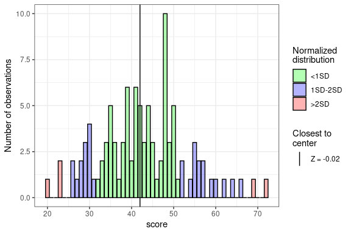
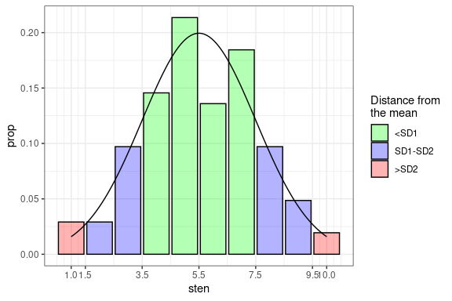
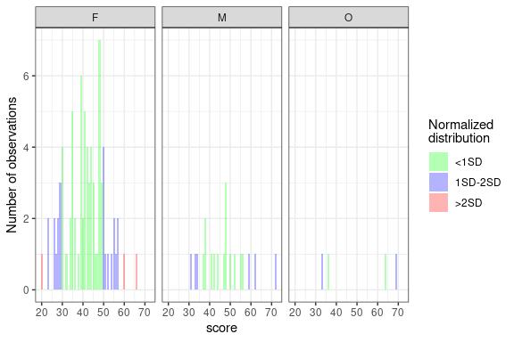
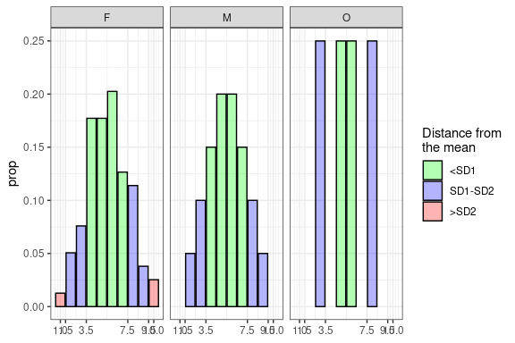

stenR is a package tailored mainly for users and creators of psychological questionnaires, though other social science researchers and survey authors can benefit greatly from it.
It provides tools to help with processes necessary for conducting such studies:
- processing data from raw item scores to raw factor/scale scores
- standardization of the raw scores into standard scale of your choosing, either by:
- normalization of the raw scores using frequency table (if no norms have been developed before). Usually for authors of questionnaires or their adaptations.
- importing scoring table developed by questionnaire authors - for researchers only using the measure
Furthermore, tools for developing or using norms on grouped basis are also provided (up to two intertwined grouping conditions are supported).
Most in-depth information is provided within vignette Tour from data to results (for basic and verbose explanation) and less verbose but more complete in stenR usage vignette.
Installation
You can install the current version from GitHub with:
# install.packages("devtools")
devtools::install_github("StatisMike/stenR")Usage
Data processing
Process data from item raw scores to factor/scales scores
# Exemplary data provided within package
str(SLCS)
#> 'data.frame': 103 obs. of 19 variables:
#> $ user_id: chr "damaged_kiwi" "unilateralised_anglerfish" "technical_anemonecrab" "temperate_americancurl" ...
#> $ sex : chr "M" "F" "F" "F" ...
#> $ age : int 30 31 22 26 22 17 27 24 20 19 ...
#> $ SLCS_1 : int 4 5 4 5 5 5 5 4 4 5 ...
#> $ SLCS_2 : int 2 2 4 3 2 3 1 5 2 1 ...
#> $ SLCS_3 : int 1 2 4 2 3 1 1 4 1 2 ...
#> $ SLCS_4 : int 2 1 4 2 4 2 1 4 4 2 ...
#> $ SLCS_5 : int 2 2 4 1 2 2 2 4 2 2 ...
#> $ SLCS_6 : int 4 4 5 5 5 5 1 2 5 4 ...
#> $ SLCS_7 : int 4 4 4 5 3 5 2 3 5 3 ...
#> $ SLCS_8 : int 4 5 4 5 4 5 5 4 4 5 ...
#> $ SLCS_9 : int 2 3 2 1 3 1 1 4 1 1 ...
#> $ SLCS_10: int 4 4 3 4 4 4 5 4 5 5 ...
#> $ SLCS_11: int 1 1 2 1 1 2 1 3 1 1 ...
#> $ SLCS_12: int 4 2 4 3 3 2 2 4 3 1 ...
#> $ SLCS_13: int 4 5 5 4 3 4 4 4 5 5 ...
#> $ SLCS_14: int 2 1 3 2 4 1 1 4 1 1 ...
#> $ SLCS_15: int 5 4 4 4 4 3 3 2 5 4 ...
#> $ SLCS_16: int 4 5 5 4 5 4 5 5 5 5 ...
# create scale specifications
SL_spec <- ScaleSpec(
name = "Self-Liking",
item_names = c("SLCS_1", "SLCS_3", "SLCS_5", "SLCS_6", "SLCS_7",
"SLCS_9", "SLCS_11", "SLCS_15"),
min = 1,
max = 5,
reverse = c("SLCS_1", "SLCS_6", "SLCS_7", "SLCS_15")
)
SC_spec <- ScaleSpec(
name = "Self-Competence",
item_names = c("SLCS_2", "SLCS_4", "SLCS_8", "SLCS_10", "SLCS_12",
"SLCS_13", "SLCS_14", "SLCS_16"),
min = 1,
max = 5,
reverse = c("SLCS_8", "SLCS_10", "SLCS_13")
)
GS_spec <- CombScaleSpec(
name = "General Score",
SL_spec,
SC_spec
)
# summarize data into factors/scales
summed_data <- sum_items_to_scale(
data = SLCS,
SL_spec,
SC_spec,
GS_spec,
retain = c("user_id", "sex")
)
str(summed_data)
#> 'data.frame': 103 obs. of 5 variables:
#> $ user_id : chr "damaged_kiwi" "unilateralised_anglerfish" "technical_anemonecrab" "temperate_americancurl" ...
#> $ sex : chr "M" "F" "F" "F" ...
#> $ Self-Liking : int 13 15 19 10 16 12 18 28 10 14 ...
#> $ Self-Competence: int 20 15 26 19 25 17 14 28 19 13 ...
#> $ General Score : int 33 30 45 29 41 29 32 56 29 27 ...Create FrequencyTable, ScoreTable for normalization
Generate norms from raw data to normalize and standardize results
GS_ft <- FrequencyTable(summed_data$`General Score`)
#> ℹ There are missing raw score values between minimum and maximum raw scores.
#> They have been filled automatically.
#> No. missing: 13/53 [24.53%]
plot(GS_ft)
GS_st <- ScoreTable(GS_ft, scale = STEN)
plot(GS_st)
normalized_GS <- normalize_score(
summed_data$`General Score`,
table = GS_st,
what = "sten"
)
normalized_data <- normalize_scores_df(
data = summed_data,
vars = "General Score",
GS_st,
what = "sten",
retain = c("user_id", "sex")
)
str(normalized_GS)
#> num [1:103] 4 3 6 3 5 3 4 8 3 2 ...
str(normalized_data)
#> 'data.frame': 103 obs. of 3 variables:
#> $ user_id : chr "damaged_kiwi" "unilateralised_anglerfish" "technical_anemonecrab" "temperate_americancurl" ...
#> $ sex : chr "M" "F" "F" "F" ...
#> $ General Score: num 4 3 6 3 5 3 4 8 3 2 ...Create GroupedFrequencyTable and GroupedScoreTable
Generate norms for different groups on basis of up to two GroupConditions objects
sex_grouping <- GroupConditions(
conditions_category = "Sex",
"M" ~ sex == "M",
"F" ~ sex == "F",
"O" ~ sex == "O"
)
GS_gft <- GroupedFrequencyTable(
data = summed_data,
conditions = sex_grouping,
var = "General Score",
.all = FALSE
)
#> ℹ There are missing raw score values between minimum and maximum raw scores for
#> some groups. They have been filled automatically.
#> • M No. missing: 25/42; 59.52%
#> • F No. missing: 15/47; 31.91%
#> • O No. missing: 33/37; 89.19%
plot(GS_gft)
GS_gst <- GroupedScoreTable(GS_gft, scale = STEN)
plot(GS_gst)
grouping_normalized <- normalize_scores_grouped(
data = summed_data,
vars = "General Score",
GS_gst,
retain = c("user_id", "sex"),
what = "sten",
group_col = "Group"
)
str(grouping_normalized)
#> Classes 'data.table' and 'data.frame': 103 obs. of 4 variables:
#> $ Group : chr "M" "F" "F" "F" ...
#> $ user_id : chr "damaged_kiwi" "unilateralised_anglerfish" "technical_anemonecrab" "temperate_americancurl" ...
#> $ sex : chr "M" "F" "F" "F" ...
#> $ General Score: num 3 4 6 3 5 3 4 9 3 3 ...Create and export ScoringTable
Export generated norms in universal format
ST_csv <- tempfile(fileext = ".csv")
GS_scoring <- to_ScoringTable(
table = GS_gst,
min_raw = 16,
max_raw = 80
)
export_ScoringTable(
table = GS_scoring,
out_file = ST_csv,
method = "csv"
)
#> Warning: <GroupConditions> haven't been exported. To export them with csv method, please
#> provide the `cond_file` argumentCreate ScoringTable from csv or json file
Import ScoringTable from universally readable formats (eg. create csv on basis of published norms)
"sten","M","F","O"
1,NA,"16-22",NA
2,"16-32","23-26",NA
3,"33-36","27-29","16-35"
4,"37-40","30-37",NA
5,"41-47","38-41","36-63"
6,"48-51","42-47","64-68"
7,"52-58","48-49",NA
8,"59-71","50-55","69-80"
9,"72-80","56-59",NA
10,NA,"60-80",NA
imported <- import_ScoringTable(
source = ST_csv,
method = "csv",
conditions = sex_grouping
)
scoring_normalized <- normalize_scores_scoring(
data = summed_data,
vars = "General Score",
imported,
retain = c("user_id", "sex"),
group_col = "Group"
)
str(scoring_normalized)
#> 'data.frame': 103 obs. of 4 variables:
#> $ user_id : chr "damaged_kiwi" "unilateralised_anglerfish" "technical_anemonecrab" "temperate_americancurl" ...
#> $ sex : chr "M" "F" "F" "F" ...
#> $ Group : chr "M" "F" "F" "F" ...
#> $ General Score: num 3 4 6 3 5 3 4 9 3 3 ...